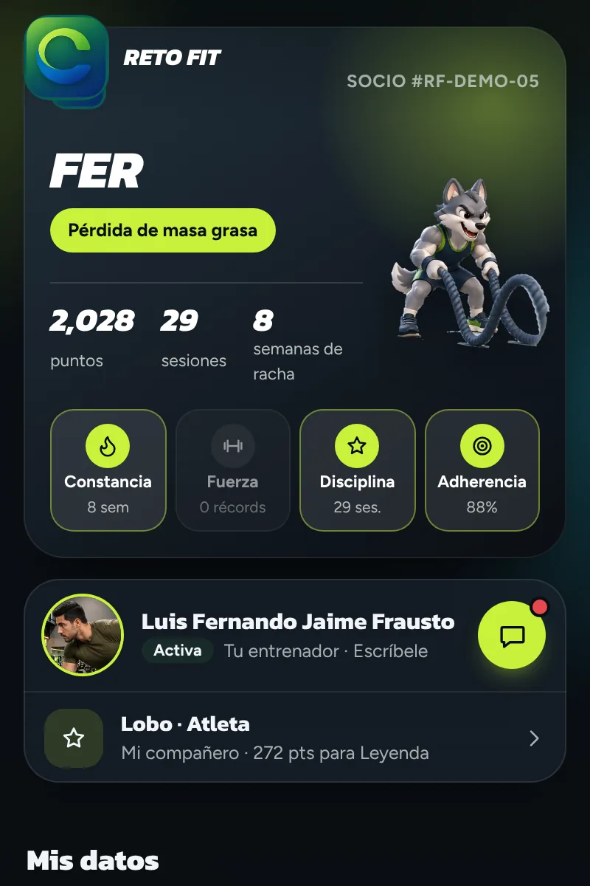
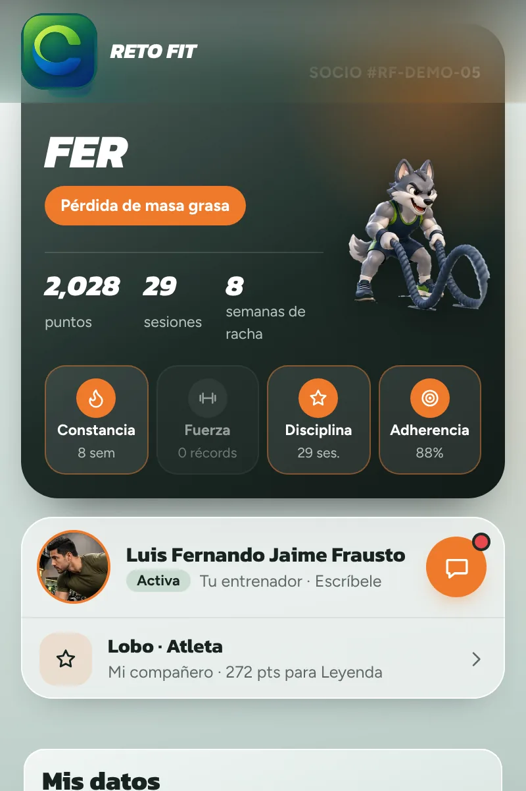

La foto, el nombre y un botón de chat juntos. Tocar la fila abre los mensajes; el punto rojo avisa si te escribió. La foto abre el método de tu entrenador.

Oscuro

Salvia
Captura de la app real con un socio de prueba. La foto del entrenador es de ejemplo; en la app sale la suya.